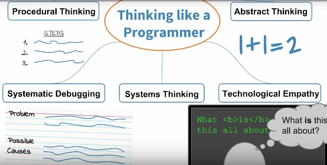
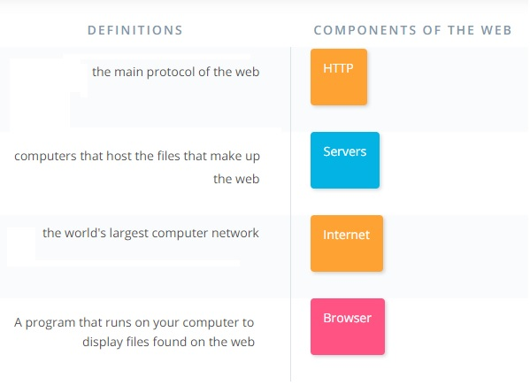
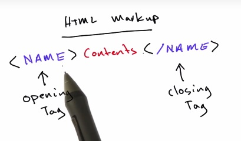
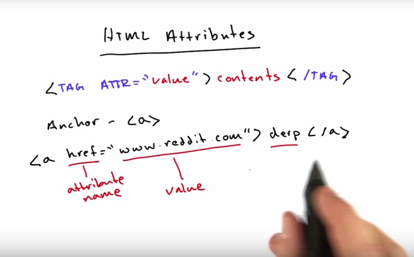
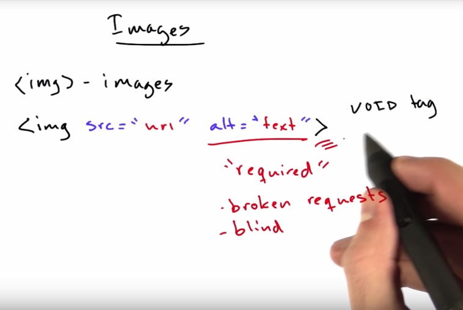
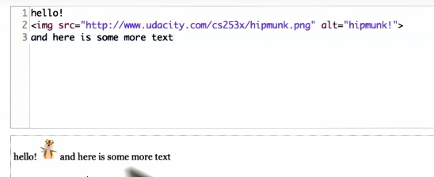
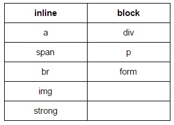

(16)
(16)
Setting Up: Set up your text editor (Atom, Pycharm, etc) (2)
Thinking Like a Programmer:
(6)
- Procedural Thinking: Creating unambiguous instructions for a computer to follow
- Abstract Thinking: Finding similarity, or as programmers would say, generality amongst seemingly different things. For example, in this Nanodegree you will visit hundreds of Udacity web pages. It would be impractical for a programmer to specifically program each of these pages individually.
- Systems Thinking: Breaking a big problem down into smaller pieces. Programmers do this when they create a plan (often on paper) for how a program will work.
- Technological Empathy: "Technological empathy" comes in many forms. For example, computer empathy is the ability to understand what a computer is, how it works, and what it's good and bad at doing.
- Debugging: A systematic process of identifying the cause of a computer program that doesn't work. (7)
Support from the Udacity Team:
- Slack Community: This platform allows students to quickly chat about issues in any of the course material as well as offer help to stuck classmates.
- Forums
- 1:1 Appointments: For more specific, coding-related questions, schedule a one-on-one appointment with a Coach by clickingon One-on-One Appointments in the Resources tab. (3)
Integrity and Mindset: The Honor Code: "I hereby confirm that all of my project submissions consist of my own work. Accordingly, I will document and cite the origins of any part(s) of my project submissions that were taken from websites, books, forums, blog posts, github repositories, or any other source and explain why I used them for any part of my submission. I understand that I may be asked to explain my work in a video call with a Udacity Coach before my Nanodegree is conferred." (6)
(8)
What is HTML? Hyper Text Markup Language (1)
Intro to HTML Tags: HTML Markup: <name>contents</name>
 (2)
Follow Along with Steve: Making stuff bold: HTML is <b>reasonably straightforward</b> (3)
Italics: <em>HTML is <b>reasonably straightforward</b></em> (5)
Making Links:
 (8)
Adding Images:

(9)
Inline vs Block: Example: <br> is inline whereas <p> is a block. What <p> does that's different from <br> is it created an invisible box around it's contents. (13)
Span and Div: <span> is inline and <div> is block. They don't do anything other than just contain their content and there's a way to attach styles to them, to adjust how they display.
 (15)
Document Structure:
(16)